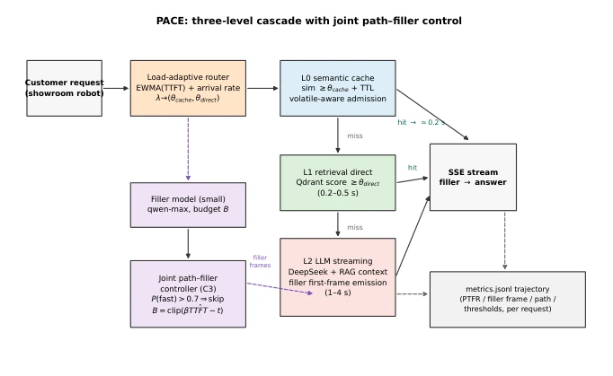
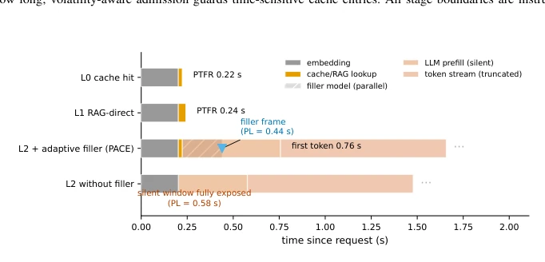
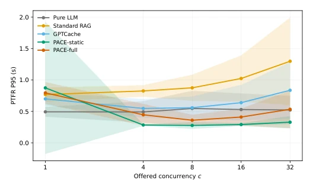
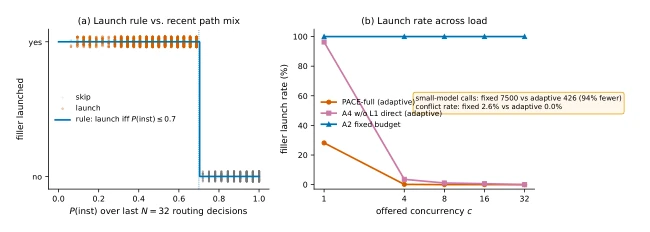
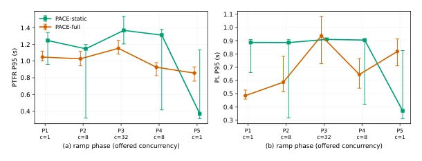
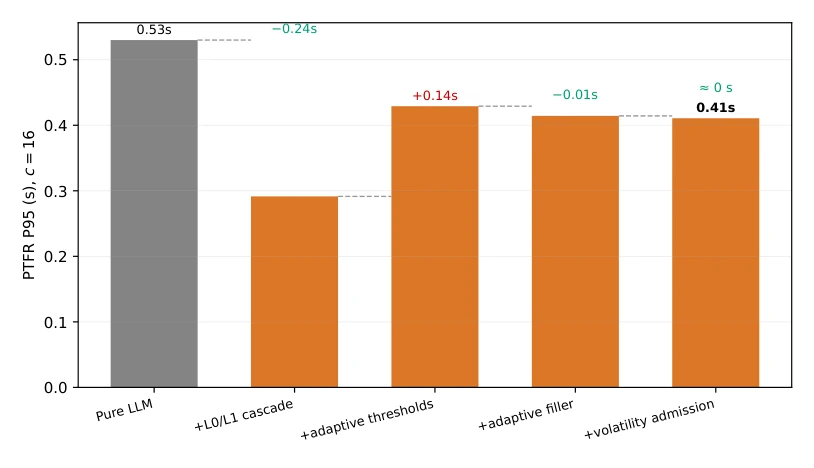
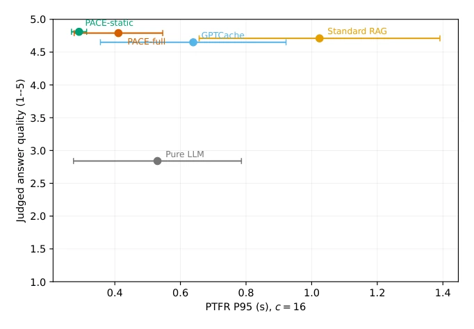
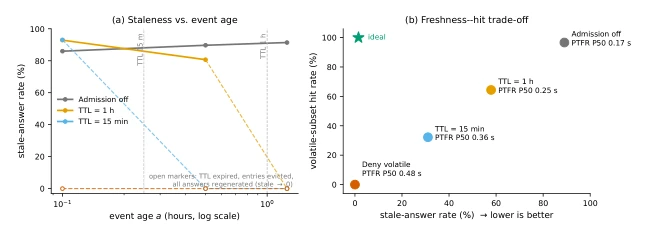

This paper transforms LLM services from "running fast" to "looking fast". The authors understand user experience well, knowing users do not care how long it takes to finish generation, only when the first serving is brought to the table. However, this is essentially an engineering optimization problem, not an algorithmic innovation. Combining cache, routing, and filler is indeed stronger than single optimization, but "adaptive" sounds high-end, it is actually just a weighted linear adjustment. Most interestingly, they dare to quantify "filler conflict risk", which is a blind spot in previous research. Although deployed on robots, the core is still service computing, somewhat distant from true embodied intelligence decision-making, but for improving QoE in deployment scenarios, this approach is indeed practical. Its steady-state gating design, though conservative, ensures stability in production environments and is worth learning from by the engineering community.
In large model dialogue services, QoE (Quality of Experience) is more critical than QoS (Quality of Service). The user-perceived first-token latency (PTFR) determines whether the conversation continues, not the total generation time. Existing works such as FrugalGPT [9] optimize cost, GPTCache [11] optimize hit rate, Adaptive-RAG [16] optimize retrieval quality, yet no one jointly controls "answer source" and "wait window content". Human-computer interaction research [1-4] confirms fillers can improve perceived latency, but existing systems like ConvFill [19] do not quantify filler-answer conflict risk, nor coordinate with routing. This paper aims to resolve this fragmentation, minimizing PTFR under quality and cost constraints, filling the gap in service-level QoE optimization. Especially for embodied agent scenarios, silent waiting is considered a failure, thus this research is crucial for robot service deployment.
The PACE framework includes a three-level cascaded architecture: L0 semantic cache (near-zero latency), L1 retrieval direct return (0.2-0.5s), L2 LLM streaming generation (1-4s). There are three core innovations: 1. Load-adaptive routing: Constructing a load index based on TTFT EWMA and arrival rate, dynamically adjusting cache and retrieval thresholds to avoid failure of fixed thresholds under load fluctuations. Introducing a steady-state gating mechanism, locking thresholds when load is stable to ensure returning to production baselines. 2. Joint path-filler control: Deciding whether to initiate small model fillers based on immediate reply probability, and dynamically setting wait budgets to avoid invalid fillers. First to quantify and report filler-answer conflict risk, ensuring safety. 3. Volatility-aware cache admission: Distinguishing sensitive queries (e.g., prices) via lexical priors, setting short TTL or rejecting, preventing serving stale answers. All decisions are based on online signals, requiring no training, and ensure returning to production baselines under stable loads via the steady-state gating mechanism.

Fig. 1. PACE architecture. A request is embedded once and evaluated by a three-level cascade (L0 semantic cache, L1 retrieval direct return, L2 LLM streaming). A load-adaptive router sets both thresholds from online signals; a joint path–filler controller decides whether a small filler model occupies the waiting window and for how long; volatility-aware admission guards time-sensitive cache entries. All stage boundaries are instrumented into a per-request structured trajectory.

Fig. 2. Anatomy of one request on each cascade path (median stage times of the deployed system). On L0/L1 the answer itself is the first frame. On L2 the filler model runs in parallel with generation and emits its frame at min(tf, ti), so the perceived first response arrives at the filler frame while the substantive stream continues behind it (the coverage decomposition of Eq. (2)).
Tested in a deployment environment with 75,000 requests, using CarQA series benchmarks (including volatile subsets) and DuReader. Baselines include Pure LLM, Standard RAG, GPTCache, and PACE-static. Metrics cover PTFR P95, quality scores, and cost. Results show PACE-static P95 PTFR is 0.29s under steady state, superior to Pure LLM's 0.53s. PACE-full is slightly slower under steady state (0.41s), but performs more robustly under load fluctuations. Ablation studies show removing the L1 path causes the most damage. Filler control reduces small model calls by 94% and conflict rate is 0%. Volatility admission reduces stale answer rate for time-sensitive queries from 86% to 0%. Additionally, under c=32 high load, the cascaded system is over 2.4 times faster than Standard RAG, proving architectural advantages.

Fig. 3. PTFR P95 versus offered concurrency for all systems (mean over three seeds, shaded 95% CI). Pure LLM is flat but slow throughout; standard RAG degrades steeply with load because every query pays the blocking retrieval-plus-generation cost; GPTCache stays mid-range. The two cascades dominate at moderate load, and their ordering at c=1 (cold cache) versus c≥4 (warm cache) illustrates the regime dependence that motivates load-adaptive thresholds: no single fixed operating point is optimal across the sweep. The accompanying load-index and path-mix trajectories are audited directly in Section IV-E.

Fig. 6. Joint path–filler controller behavior. (a) Launches occur almost exclusively when P(inst) is at or below the 0.7 boundary of Eq. (9), matching the designed step rule. (b) Launch rate across load: the adaptive controller fires almost only at c=1; over the whole sweep it issues 94% fewer filler calls than the fixed-budget arm at a 0% judged conflict rate (2.6% for the fixed arm).

Fig. 7. Non-stationary ramp stress test. Offered concurrency follows c = 1 →8 →32 →8 →1 (phases P1–P5, 150 requests each, services not restarted); the two arms are interleaved phase by phase on identical seeded streams. Markers: per-phase P95 with nonparametric bootstrap 95% CIs (slightly offset horizontally for legibility). (a) PTFR P95: PACE-full is below the PACE-static in all four transition phases; the P5 inversion is mechanistic (see the analysis below). (b) PL P95: the joint path–filler controller keeps perceived latency 0.25–0.41 s lower in P1/P2/P4, with parity at the c=32 peak. The load index λ (mean per phase: 0.00, 0.00, 0.012, 0.094, 0.01) tracks the ramp with the contraction lag bounded in Proposition 4.

Fig. 1. Waterfall decomposition of the PTFR P95 gain of PACE-full over pure LLM at c=16. The L0/L1 cascade contributes the largest share; removing L1 (A4) is the single most damaging ablation; adaptive filler control improves perceived latency with 94% fewer small-model calls at 0% conflict; volatility admission trades a small latency increase for the stale-answer reduction of Table VII of the main text.

Fig. 2. Quality–latency trade-off across systems at c=16. Each point is one system; error bars are CIs on both axes.

Fig. 3. Volatility-aware admission on CarQA-Volatile. (a) Stale-answer rate per event-age bucket for each admission policy (open markers mean no cache hits remain in that bucket). (b) Freshness–hit trade-off per policy, with markers annotated by PTFR P50; the star marks the ideal point (zero staleness at full hit rate). The pooled row of Table VII of the main text and the per-bucket values of this figure use different aggregations: the table sums stale over requests, this figure plots the per-bucket rate.